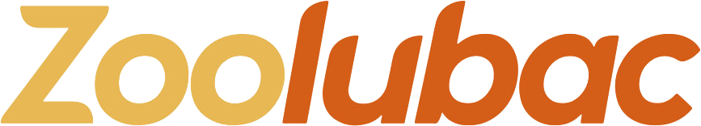

Propuesta de sitio web nuevo para MT Omicron Sigma Technologies: hospitales y clínicas por EsteriLife, veterinarios y productores por Zoolubac.
El catálogo en PDF deja de ser un archivo que se manda por mensaje y se vuelve un lugar que se puede buscar, compartir y encontrar.
COFEPRIS y SENASICA vigilan la publicidad de los productos que regulan, también en internet. Por eso cada frase del sitio y de las redes pasa por tres filtros.
Y una decisión para empezar: ¿por cuál de los dos públicos abrimos primero?